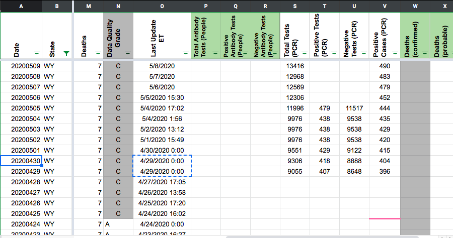
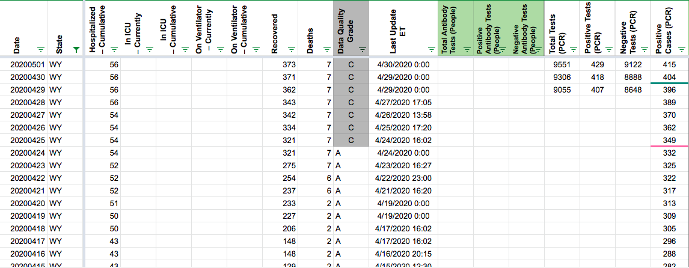

[WY] PCL Cases Historicals
Issue number 595
the-daniel-lin opened this issue on July 10, 2020 at 9:31 am
State or US: Wyoming
Describe the problem CTP Positive Cases (PCR) goes back until 4/29. There’s also a gap for Positive and Negative Tests (PCR) from 5/5 - 5/14. WY provides hover-over graphs for lab-confirmed cases (line graph - people) until 3/12 and tests (bar graph - specimens) back until 3/4.
Link to data source Lab-Confirmed Cases: https://health.wyo.gov/publichealth/infectious-disease-epidemiology-unit/disease/novel-coronavirus/covid-19-map-and-statistics/
COVID-19 Resulted Tests by Collection Date: https://health.wyo.gov/publichealth/infectious-disease-epidemiology-unit/disease/novel-coronavirus/covid-19-testing-data/
Comments
BACKFILLED (BEFORE) 
BACKFILLED (AFTER) BACK TO 3/12 
I am seeing some slight discrepancies. Need to look at this again. Might be shifted by one day.
Note for backfill team - we’ve backfilled the confirmed cases (PCR) but have yet to adjust for negatives. Please adjust negatives and review the graph “Lab Confirmed Cases by Date of Report, Total Number of Recovered Lab Confirmed Cases; and Percent of Cases with Community Spread or Unknown Exposure” located at: https://health.wyo.gov/publichealth/infectious-disease-epidemiology-unit/disease/novel-coronavirus/covid-19-map-and-statistics/
This issue has been automatically marked as stale because it has not had recent activity. It will be closed if no further activity occurs. Thank you for your contributions!
We’re handling this in #739
Data backfilled using https://health.wyo.gov/publichealth/infectious-disease-epidemiology-unit/disease/novel-coronavirus/covid-19-map-and-statistics/ Data recorded on graph on a day will be recorded in sheet as the subsequent day